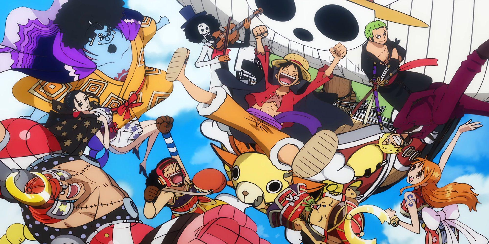

Luffy's Crew
Luffy's crew, known as the Straw Hat Pirates, is a diverse and tight-knit group of individuals who each have their own dreams and reasons for joining the journey. Roronoa Zoro is the stoic swordsman aiming to become the world’s greatest, serving as Luffy’s trusted right-hand man. Nami, the clever and courageous navigator, wants to map the entire world and helps guide the crew through dangerous seas. Usopp, the sharpshooter and storyteller, dreams of becoming a brave warrior of the sea and often brings humor and creativity to the crew. Sanji, the chivalrous cook, searches for the legendary All Blue and keeps the crew well-fed and in top condition. Tony Tony Chopper is the adorable reindeer doctor who wants to cure any illness and help people everywhere. Nico Robin, the calm and intelligent archaeologist, seeks the true history of the world by uncovering the secrets of the Void Century. Together, they form a powerful and loyal family, supporting each other through every danger and adventure on their quest for the One Piece.
